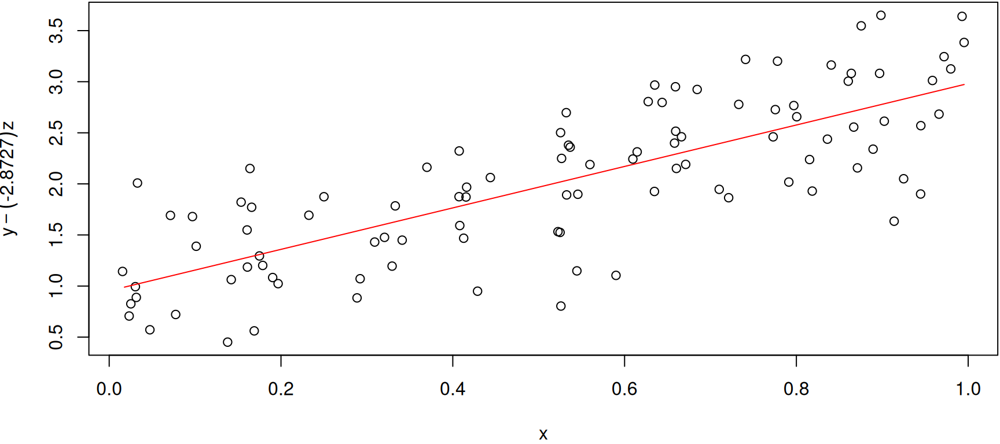

オープンソースの開発ツールのユーザーがプレゼンの道具に求めること
(1)と(2)を実現したR Markdownで、(3)と(4)を達成したい
R Markdown Format for reveal.js Presentationsの利用をYAMLフロントマターで指定したあと、お好みで
する。必須ではない。
YAMLフロントマターで色々指定できる。もちろんrevealjs::revealjs_presentationの指定は必須。
output:
revealjs::revealjs_presentation:
theme: moon
highlight: tango
center: true
css: styles.cssCSSファイル（e.g. styles.css）も指定できる。なお、Rmdファイルと同じフォルダーに置かないと、CSSで指定した画像ファイルをself-containedできない模様。
::: incremental
- incremental節は一行一行表示
:::
::: nonincremental
- nonincremental節はまとめて表示
:::slideNumber=TRUEで、右下に小さく番号が入る。よく使いそうだがオプション。
output:
revealjs::revealjs_presentation:
reveal_options:
slideNumber: trueself_cotainedを犠牲に、標準プラグインでできる。
output:
self_cotained: false
revealjs::revealjs_presentation:
reveal_plugins: ["search", "menu", "chalkboard"]chalkboardはキーボードのcで書き込みモードが呼び出せ、bで黒板が呼び出せる。
searchはmやoなどのアルファベットが入ると検索できないので、後述するオーバービューでCTRL+Fで検索した方が確実。
バージョン0.10からchalkboardの左下のアイコンが標準で出なくなった。以下のオプションを追加すれば出てくる。
reveal_options:
chalkboard:
toggleNotesButton: true
toggleChalkboardButton: true.reveal {
font-size: 200%;
}0.9から0.10にバージョンアップしたら、フォントサイズが大きくなり。
h1.title {
font-size: 150%;
color: blue;
}section.slide {
text-align: left;
}
section.slide h1, section.slide h2 {
text-align: center;
}section.slide blockquote {
text-align: left;
overflow:auto;
width: 90%;
background-color: rgba(255, 255, 255, 0.4);
}section.slide blockquote, pre {
text-align: left;
overflow: auto;
width: 90%;
background-color: rgba(255, 255, 255, 0.4);
}
div.sourceCode {
background-color: rgba(255, 255, 255, 0.4);
border: 10px sold black;
}<section>タグに属性を追加example.Rmdの表紙の背景画像にcover.jpgを指定する例
library(rmarkdown)
input <-"example.Rmd"
output <- "example.html"
bgimg <- "cover.png"
intermediate <- sub("\\.[^.]*$", ".temp.html", input)
render(input, run_pandoc=TRUE, output_file=output)
file.rename(output, intermediate)
# localeがutf-8ではない古い処理系のRでテキストとして処理すると未対応文字が消えるので、バイナリ処理
# なおSys.setlocale("LC_ALL", "C")で処理後、Sys.setlocale("LC_ALL", "Japanese")）でも誤魔化せる
binreplace <- function(input, output, pattern, replacement,
maximum=1, buffsize=1024*1024*5, skip=0){ # 5MBを一気読み
istream <- file(input, "rb")
ostream <- file(output, "wb")
v <- readBin(istream, "raw", buffsize)
if(0<skip){
writeBin(v[1:skip], ostream)
v <- v[-c(1:skip)]
}
# raw型のvを連結してcharacter型のjvにする
jv <- paste(v, collapse="")
jps <- paste(pattern, collapse="")
jrs <- paste(replacement, collapse="")
# jvを置換してrvをつくる
rs <- sub(jps, jrs, jv)
# jvを2文字づつ切り出し、hexmode型→raw型と変換してバイナリ出力する
writeBin(as.raw(as.hexmode(
sapply(seq(1, nchar(rs), 2), function(i){
substr(rs, i, i + 1)
})
)), ostream)
close(ostream)
close(istream)
}
binreplace(intermediate, output,
charToRaw("<section"), # 検索文字列
charToRaw(sprintf("<section data-background='url(%s)' data-background-size='cover'", bgimg)) # 置換文字列
)影が薄くて名前を覚えてもらえないあなたに！
YAMLフロントマターにオプション追加
output:
revealjs::revealjs_presentation:
includes:
after_body: doc_suffix.htmlhtml部品ファイル（i.e. doc_suffix.html）にcssのidかclassを指定したdivタグを並べる
<div class="suffix_words">
<div class="suffix_inner">
<!-- 表示する情報 -->
</div></div>
<div class="suffix_image"></div>CSSのpositionとtop/right/bottom/leftを駆使して表示調整
div.suffix_words {
position: fixed; top: 0; right: 7vmin;
height: 7vmin;
}
div.suffix_inner {
position: relative; top: 3vmin; right: 1vmin;
font-size: 2vmin;
}次ページに続く
続き
div.suffix_image {
position: fixed; top: 0; right: 0;
width: 7vmin; height: 7vmin;
background-image: url(icon.png);
background-size: 7vmin 7vmin;
}icon.pngは縦横同じサイズの透過色のある画像
背景画像自体は簡単に設定できるが、文字色の調整も必要
## 背景画像を設定する{
.cat_feeling_terrible
data-background=url(cat_feeling_terrible.jpg)
data-background-size=cover}見出しに属性をセットして、CSSファイルに追記
h1.cat_feeling_terrible, h2.cat_feeling_terrible, .cat_feeling_terrible {
color: white; text-shadow: 0 0 3px black;
}
section.cat_feeling_terrible pre {
background-color: white; color: black; text-shadow: none;
}やらない方が無難。バージョン0.10でdata-background-sizeを読まなくなった。なお、sectionタグの属性で画像ファイル名を指定するためか、画像ファイルの埋め込みはできなかった。
## headline {#id_for_headline}pandoc_args: [
'--from', 'markdown+autolink_bare_uris+tex_math_single_backslash-implicit_figures'
]*Annals of Eugenics*は、**1954年**に*Annals of Human Genetics*に
名称変更し~~ている~~た。Annals of Eugenicsは、1954年にAnnals of
Human Geneticsに 名称変更しているた。
- Sir Ronald Aylmer Fisher
- Jerzy Neyman
- Edgar Shannon Anderson1. Sir Francis Galton
1. Karl Pearson
1. Egon Sharpe Pearson
1. Sir Francis Galton$x^2$と$で挟むとインラインで\(x^2\)と表示できる。 $x=`r sum(1:10)`$とインラインコードを数式内に挿入すると、\(x=55\)と計算され表示される。
$$
y = C_1 e^{-\frac{k}{2} t}
\cos{ \Bigg ( t \sqrt{ \omega^2 - \frac{k^2}{4}} \Bigg )}
+
C_2 e^{-\frac{k}{2}t}
\sin{ \Bigg ( t \sqrt{ \omega^2 - \frac{k^2}{4}} \Bigg ) }
$$とブロック要素で書くと、
\[ y = C_1 e^{-\frac{k}{2} t} \cos{ \Bigg ( t \sqrt{ \omega^2 - \frac{k^2}{4}} \Bigg )} + C_2 e^{-\frac{k}{2}t} \sin{ \Bigg ( t \sqrt{ \omega^2 - \frac{k^2}{4}} \Bigg ) } \]
と表示できる。
$$\begin{align}
y &= \beta_0 + \beta_1 x_1 + \beta_2 x_2 + \cdots + \epsilon \\
y - \beta_1 x_1 &= \beta_0 + \beta_2 x_2 + \cdots + \epsilon
\end{align}$$\[\begin{align} y &= \beta_0 + \beta_1 x_1 + \beta_2 x_2 + \cdots + \epsilon \\ y - \beta_1 x_1 &= \beta_0 + \beta_2 x_2 + \cdots + \epsilon \end{align}\]
alignを使って&で位置あわせができる。
&は=以外の前にもつけられるので、式の途中で折り返しもできる。
> The “intelligence” demanded of the workman, as well as of the director
> of an industrial process, is little else than a degree of facility
> in the apprehension of and adaptation to a quantitatively determined
> causal sequence. – Thorstein Bunde VeblenThe “intelligence” demanded of the workman, as well as of the director of an industrial process, is little else than a degree of facility in the apprehension of and adaptation to a quantitatively determined causal sequence. – Thorstein Bunde Veblen
他のR Markdown文書と同様に、インラインの場合は`r 1+2+3`のように、コードチャンクの場合は
とRのコードを実行し、オプションに応じて結果を表示する。RcppやPythonやJuliaのコードにも対応。
以下を覚えておくと、だいたい困らない。
| コード・ブロックの開始 | 実行 | コード | 出力 | 警告 | メッセージ | ^## |
|---|---|---|---|---|---|---|
| ```{r} | ✓ | ✓ | ✓ | ✓ | ✓ | ✓ |
| ```{r results=“asis” } | ✓ | ✓ | ✓ | ✓ | ✓ | |
| ```{r comment=“” } | ✓ | ✓ | ✓ | ✓ | ✓ | |
| ```{r include=FALSE} | ✓ | ✓ | ✓ | ✓ | ✓ | |
| ```{r eval=FALSE} | ✓ | |||||
| ```{r echo=FALSE, include=FALSE, warning=FALSE, message=FALSE} | ✓ | ✓ |
RとHTMLで折り返し位置が合わないときは、Rの方で調整できる。
[1] "This is a pen." "This is an apple."[1] "This is a pen."
[2] "This is an apple."<div class="psudopre">`r 1+2+3`</div>R CMD INSTALL`と書くと、CMD INSTALLを実行しようとしてエラーになるR CMD INSTALLR Markdownとしては普通だが、サイズや配色は調整したくなる。
以上のようなコードでパイプ表をつくることもできる。:---が左寄せ、---:が右寄せ、:---:が中央寄せ。
| x | y | z |
|---|---|---|
| 0.02457 | 0.63151 | 0.0767 |
| 0.12553 | 0.24736 | 0.42526 |
| 0.94442 | 1.14992 | 0.84818 |
tr.header {
color: white;
background-color: black;
}
tr {
color: black;
background-color: #F0F0F0;
}データフレームや行列を表示すると見栄えが悪い。 code chunkのオプションにresult=“asis”かcomment=““が無いと行頭に##をつけてくる。
y x z
1 0.63151 0.024573 0.07669633
2 0.24736 0.125527 0.42526402
3 1.14992 0.944417 0.84817609
4 0.17707 0.479637 0.60167426
5 1.40880 0.759737 0.41544334
6 -0.24521 0.378687 0.89865285
7 2.37847 0.629138 0.00016118
8 0.21904 0.341802 0.49520883データフレームをパイプ表に変換してくれる。
| y | x | z |
|---|---|---|
| 0.63151 | 0.02457 | 0.07670 |
| 0.24736 | 0.12553 | 0.42526 |
| 1.14992 | 0.94442 | 0.84818 |
| 0.17707 | 0.47964 | 0.60167 |
knitr::kable(matrix(c(1, 23, 19, 7), 2, 2, dimnames=list(c("A", "B"), c("a", "b"))),
align=c("r", "r"), caption="2×2表")| a | b | |
|---|---|---|
| A | 1 | 19 |
| B | 23 | 7 |
なぜかバージョン0.9では動かないので、コードだけ示す。
高機能だが狭い。細かい調整は困難。
results="asis", warning=FALSE, message=FALSEを忘れると困った表示になるr_lm <- lm(y ~ x + z, data=df01)
library(stargazer, quietly = TRUE)
stargazer(r_lm, type="html", out.header=FALSE, suppress.errors=TRUE)## stargazerの表示{.stargazer}section.stargazer tr, section.stargazer td {
color: black;
background-color: white;
border: none;
font-size: 75%;
}| Dependent variable: | |
| y | |
| x | 2.088*** |
| (0.153) | |
| z | -2.766*** |
| (0.143) | |
| Constant | 0.878*** |
| (0.115) | |
| Observations | 100 |
| R2 | 0.857 |
| Adjusted R2 | 0.854 |
| Residual Std. Error | 0.413 (df = 97) |
| F Statistic | 290.400*** (df = 2; 97) |
| Note: | p<0.1; p<0.05; p<0.01 |
Hlavac, Marek (2022). stargazer: Well-Formatted Regression and Summary Statistics Tables. R package version 5.2.3. https://CRAN.R-project.org/package=stargazer
参照を書いてくれと要請されるので、以下のようにHTMLで書いている。
<div style="margin-top:12px; font-size: 50%;">
Hlavac, Marek (2022). stargazer: Well-Formatted Regression and Summary Statistics Tables.
R package version 5.2.3. https://CRAN.R-project.org/package=stargazer
</div>GLMで済む場合はstargazerで作業時間が一気に減るはずなので、有難くリファレンスかどこかに書いておこう。
プレゼンもしくは最近需要が高くなった信頼区間を考えるとこっちの方がよいかも
| Parameter | Coefficient | SE | CI | CI_low | CI_high | t | df_error | p |
|---|---|---|---|---|---|---|---|---|
| (Intercept) | 0.88 | 0.12 | 0.95 | 0.65 | 1.11 | 7.63 | 97 | 1.66e-11 |
| x | 2.09 | 0.15 | 0.95 | 1.78 | 2.39 | 13.66 | 97 | 2.52e-24 |
| z | -2.77 | 0.14 | 0.95 | -3.05 | -2.48 | -19.36 | 97 | 4.31e-35 |
自動で表が作られない場合、例えばLOOCVは表をつくる。
library(boot)
frml <- c("y ~ x + z", "y ~ x", "y ~ z")
delta <- matrix(NA, length(frml), 2, dimnames=list(
# TeXの\\はRの文字列の中では\\\\と書かないとエスケープ文字
c("$y = \\beta_0 + \\beta_1 x + \\beta_2 z + \\epsilon$", "$y = \\beta_0 + \\beta_1 x + \\epsilon$", "$y = \\beta_0 + \\beta_2 z + \\epsilon$"),
c("raw", "adjusted")
))
for(i in 1:length(frml)){
delta[i, ] <- cv.glm(df01, glm(formula(frml[i]), data=df01))$delta
}
knitr::kable(delta)| raw | adjusted | |
|---|---|---|
| \(y = \beta_0 + \beta_1 x + \beta_2 z + \epsilon\) | 0.17655 | 0.17650 |
| \(y = \beta_0 + \beta_1 x + \epsilon\) | 0.83891 | 0.83874 |
| \(y = \beta_0 + \beta_2 z + \epsilon\) | 0.50697 | 0.50685 |
パイプ表の中にTeXの数式とインラインコードを入れて表にすることもできる。
| モデル | raw | adjusted |
|---|---|---|
| \(y = \beta_0 + \beta_1 x + \beta_2 z + \epsilon\) | 0.17655 | 0.1765 |
| \(y = \beta_0 + \beta_1 x + \epsilon\) | 0.83891 | 0.83874 |
| \(y = \beta_0 + \beta_2 z + \epsilon\) | 0.50697 | 0.50685 |
par(mar=c(4, 4, 0.1, 0.1))などと表示調整
最初のチャンク名setupのコードチャンクでRmarkdownの設定を変えてから、
次のコードチャンクでparを指定する。
同じコードチャンクでは機能しない。
他のパラメーターの変更も同様にできる（ハズ）。
という風に貼れる<div style="text-align:center;">
<img src="example.svg" width="40%"
style="border: none; box-shadow: none;" alt="It's a shape!">
</div>revealjsとMermaid.jsは相性が悪そうなので隔離する
脚注番号識別子として [^文字列]
を文に挟み、本文中のどこかに [^文字列]: 説明 を書くと、文章の末尾に脚注が付記される。
例えば、
十分原理と弱い条件付け原理を受け入れる者は，尤度原理[^1]を受け入れることになる．
[^1]: パラーメーターθの推論において，データxが観察されたあと･･･と書けばよい。
Markdown記法なので
[The R Project for Statistical Computing](https://www.r-project.org/)対処法3つ
<u>魚心</u>あれば<u>水心</u>」と書けば「魚心あれば水心」とアンダーバーも出せるself_contained: falseになっていないと動かない